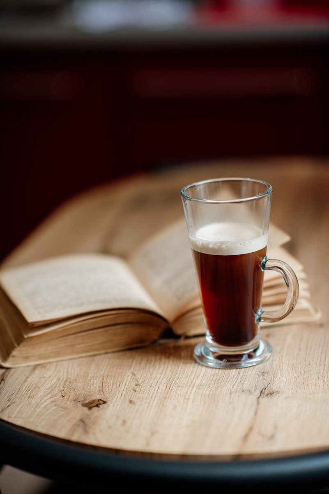

CUPPING SHEET / SAMPLE No. 000
珈琲シモゾノ
珈琲
- 店名
- シモゾノ珈琲
- 業種
- カフェ
- 所在地
- 北海道富良野市日の出町
- 採点日
カッピング(コーヒーの味見)の採点用紙になぞらえた、制作側のご案内ページです。点数欄はすべて空欄のまま。営業時間やメニューなど、くわしい情報は準備中です。
SCORING / 6 ITEMS
六つの採点項目
この採点欄は、コーヒーの評価に使われる一般的な項目をお借りした制作側の見立てです。お店の味・提供内容とは関係がなく、点数も付けていません。写真はいずれもフリー素材のイメージです。
- 01香りFragrance未記入

コーヒー豆(イメージ) - 02湯気Aroma未記入

真上から見たカップ(イメージ) - 03味わいFlavor未記入

マグカップ(イメージ) - 04余韻Aftertaste未記入

灰色のカップ(イメージ) - 05質感Body未記入

木の板の質感(イメージ) - 06ととのいBalance未記入

グラスのコーヒーと本(イメージ)
NOTE
この用紙について
「カッピング用紙の採点欄」というテーマは、屋号と「珈琲」という業種から制作側が連想したものです。お店の理念・由来とは無関係です。
SHOP DATA
お店のこと(確認できたものだけ)
| 所在地 | 〒076-0025 北海道富良野市日の出町１２−１ |
|---|---|
| 電話 | 0167-77-4191 |
| 営業時間 | 準備中 |
| 定休日 | 準備中 |
| ご予約 | 準備中 |
| 駐車場 | 準備中 |
| SNS | Instagram @zonocoffee |